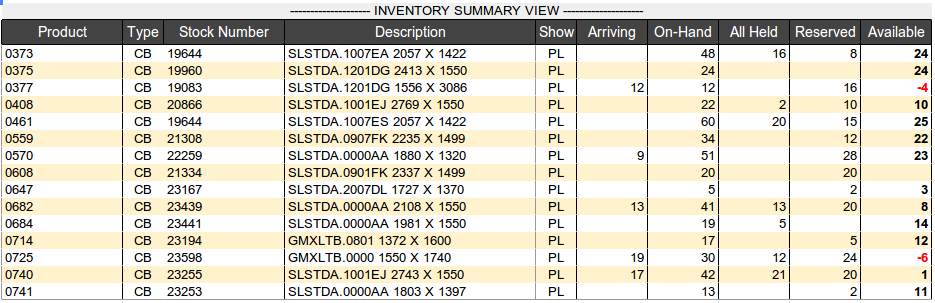
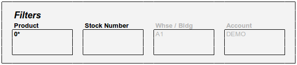

Product Masterfile Views¶
Product Setup Views¶
The product record masterfile entry consists of 5 sections described as follows.
Note
In each section, a rule line separates basic entries (above the line) from advanced entries (below the rule). In the DIMENSIONS section, The INNER column is also in the advanced area, and the entirety of LOCATOR CONTROLS and NOTES AND MESSAGES are part of advanced entries.
Note
Fungible bulk products (unit UOM = BN) track inventory by location, non-fungible inventory is tracked by location and lot.
Product Inventory View¶
Notes:
Quantities are synthesized from locator entries as follows:
ARRIVING = ON-ORDER + IN-TRANSITON-HAND = ALL WAREHOUSE CONTENTALL-HELD = SAFETY STOCK + INSPECTION HOLD + PROCESS HOLD + DAMAGEDALLOCATED = SHIP-RESERVED + PICK-ALLOCATEDAVAILABLE = ON-HAND - ALL-HELD - ALLOCATEDShip reserve may be placed against ARRIVING stock, so AVAILABLE can be negative.Product entries link to the PRODUCT information, displayed in a lightbox. Clicking (Double-clicking?) elsewhere on a line displays LOCATOR details for that product unit.
Product Filters¶
Notes:
- Filter items “Building” and “Accout” accept single entries only and do not display columns. When set by login, as with account connection, these items are grayed out and not selectable.
- PRODUCT and STOCK-NUMBER filters are multi-entry and use autocomplete.
- Products without locator quantities cannot be entered in the filter or displayed.
- For a mobile interface, tuneable columns would not display by default.